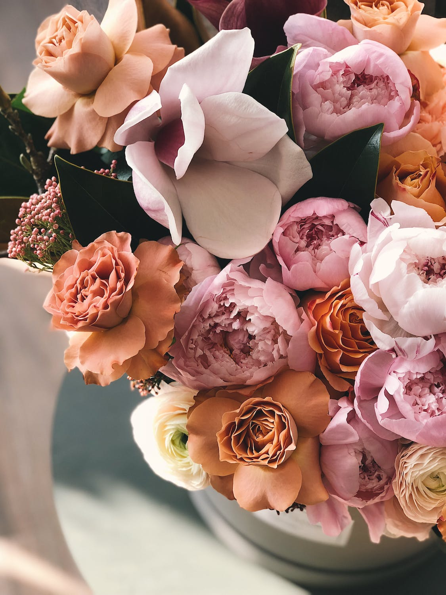

<!DOCTYPE html>
<html lang="en">

<head>
    <meta charset="utf-8">
    <meta name="viewport" content="width=device-width , initial-scale=1.0">
    <title>CSS</titl>
    <link rel="stylesheet" href="../CSS/L-7.css">
</head>

<body>

    
        <!-- CSS TRANSFORM PROPERTIES
        CSS TARNSITION PROPERTIES
        CSS FILTER PROPERTIES
        CSS ANIMATIONS -->


     <!-- Css Transform 2D   

        
            transform: translate(x,y) / translateX() / translateY()
            transform: scale(x,y) / scaleX() / scaleY()
            transform: rotate(deg) / rotate-x / rotate-y
            transform: skew(x,y) / skewX() / skewY()
         -->

     <!-- Transform Examples  -->

    <div class="translate">1</div> 
      


    <!-- 3D Transform -->

         <div class="cover">
            <div class="content"></div>
        </div> 

    <!-- Css Transition 

        
            transition /* short hand method */
            transition-duration
            transition-delay
            transition-property
            transition-timing-function{
                        ease - specifies a transition effect with a slow start, then fast, then end slowly
                        linear - specifies a transition effect with the same speed from start to end
                        ease-in - specifies a transition effect with a slow start
                        ease-out - specifies a transition effect with a slow end
                        ease-in-out - specifies a transition effect with a slow start and end
            } -->
                       
        
         <!-- Transition-Examples  -->

         <div class="main-box">
            <div class="transition"></div>
        </div> 


     <!-- css filter 

    
        blur(x) Blurs the image by x pixels.
        brightness(x) Brightness the image at any value above 1.0 or 100%. Below that, the image will be
                darkened.
        contrast(x) Provides more contrast to the image at any value above 1.0 or 100%. Below that, the
        greyscale(x) Shows the image in greyscale, with a maximum value of 1.0 or 100%.
        hue-rotate(x) Applies a hue-rotation to the image.
        Saturation       image will get less saturated.
        drop-shadow(h, v, x, y, z) Gives the image a drop-shadow. h and v can have negative values. x, y, and z are optional -->


        <!-- * Css Filter */ -->

        <!-- /* filter:blur(1px);  */
        /* filter:brightness(50%); */
        /* filter:contrast(100%); */
        /* filter:grayscale(100%); */
        /* filter:hue-rotate(360deg); */
        /* filter:invert(0%); */
        /* filter:saturate(0%); */
        /* filter:opacity(1); */
        /* filter: sepia(1); */
        /* filter:none; */
        /* filter:drop-shadow(10px -20px 1px rgb(70, 15, 62))*/ -->

            <div class="filter">
                
            </div>
</body>
</html>        

    